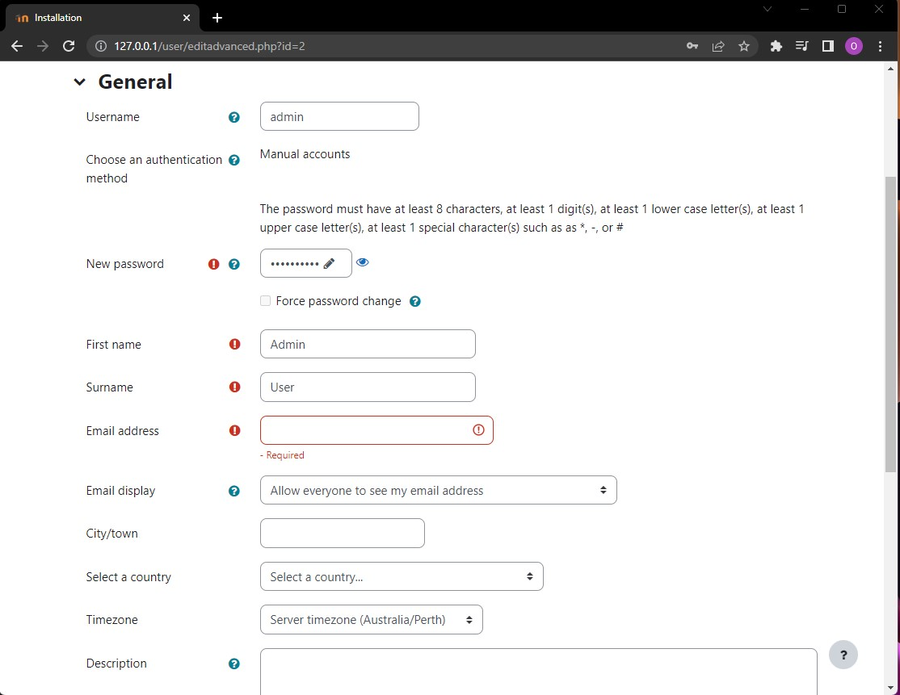

In this section we will be talking about setting up a Local Testing Environment. This might be a tricky part and you could encounter some errors, all links and references can be found in the Github Repository.
The guide focuses on three types of environment deployment:
2. Local Testing Environment
Local testing is essentially the ability to test your software through a local copy on your machine. This process eliminates the need to create a virtual machine, while having all of the files on your machine.
This guide will be using Moodle as a reference LMS. If you are developing for a different LMS, the process should be similair.
Installing Moodle
Moodle should only be installed from the Official downloads website and depending on what OS your system is running, choose the equivalent Moodle Installer Package and unzip (extract) the files to a subdirectory of your choice (it is important to remember where your files are setup, therefore it is best to create an independant folder for all of our testing purposes).
1. Click on Start Moodle to proceed.
Accept the security alerts (This will give permissions to Apache and MySQL to run on your machine, which are both required to run Moodle locally.
2. Access your Moodle Site through LocalHost
Enter 127.0.0.1 in your web browser to proceed with the installation. Remember, this will always be how you access your Moodle site.
Click on next and proceed with the default configurations, take note of the Database setting (Name and Password that you setup). You will be using this Database in further steps.
After finishing up the setup, you will get the final page of configurations in which the Moodle Admin is setup

Enter a password and email address, as well as Country and Timezone to finish up the site deployment process.
Click on update profile. On the next page, add a support and noreply email (this could be random if not needed for testing purposes).
3. Upload dummy data
When testing a Moodle Plugin, you will often need to populate the Moodle Site that you've deployed with user data, here referred to as Dummy Data to emphasize that this is all random fake data for the purpose of testing only.
Depending on your testing requirements, you might already have a dummy user database (with enrolled courses) that you could use.
If this is not the case, please refer to the Github repository for a CSV file"Userdata.csv" containing basic information for 14 users (Username, First name, Last Name and Email)
4. Add Moodle Plugin
The folder where you should add your Moodle plugin depends on the type of plugin you are developing. The most common types and corresponding folders:
- Local plugins: Local Plugins are installed in the "Local" folder in your Moodle installation. Folder is located at path/moodle/local on your server.
- Activity Modules: Activity Modules are installed in the "mod" folder in your Moodle installation. This folder is located at path/moodle/mod on your server.
- Question types: Question types are installed in the "question/type" folder in your Moodle installation. This folder is located at path/moodle/question/type on your server
- Blocks: Blocks are installed in the "Blocks" folder in your Moodle installation. This folder is located at path/moodle/blocks on your server
- Themes: Themes are installed in the "Theme" folder in your moodle installation. This folder is located at path/moodle/theme on your server
After copying the plugin into the relevant folder, make sure to enable the plugin in the Site Administration under the "Plugins tab". Make sure all necessary settings are configured correctly.
5. Test the plugin Test the plugin by using it as an instructor or student would. Try all the different settings and options to ensure they work as expected. Test the plugin's functionality in different situations, such as with different users, different types of content, or different settings.
6. Check for errors Check the error log in the Site Administration menu under the "development" tab for any error messages related to the plugin.
7. Debugging If necessary, use debugging tools such as Xdebug or Moodle Debugger to diagnose any issues that are found